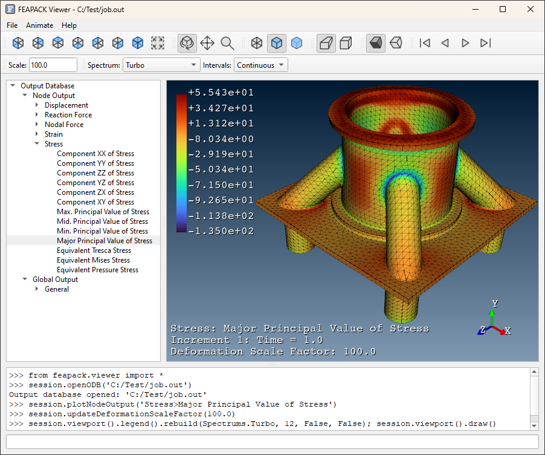

Also see my MATLAB File Exchange files with over 3000 downloads.
Learn more about FEAPACK here.
Technologies: Python · Qt · Visualization Toolkit · Intel Math Kernel Library

Learn more about FAT-SM here.
Technologies: C++ · Qt

Learn more about Omicron here.
Technologies: C# · Fortran · Visualization Toolkit · Intel Math Kernel Library · .NET Framework · Windows Presentation Foundation